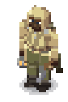
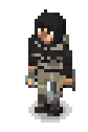
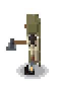
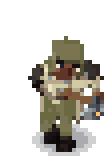

The Cut-Master
The Cut-Master is an elite of Underwake (level 49).
The Cut-Master is an elite of Underwake (level 49).
In the game
In the game The Cut-Master is level 49, elite (a group's fight). It is found in The Coral Ridges. It can drop The Cut-Master's Pick (always), Coral-Cutter's Pads (25%) and Cutter's Leather Coat (25%).
Quests
Quests that ask for it: The Coral-Cutters (behind the level cap).
Gallery







